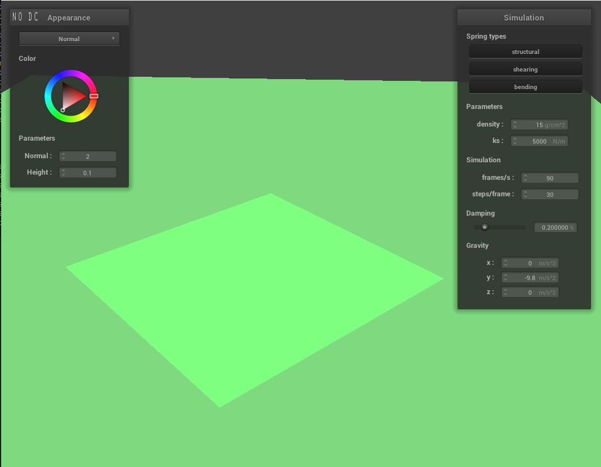

Pinned2 with Wireframe display, density = 15, ks = 5000, damping = .20%, all constraintsPinned2 with Wireframe display, density = 15, ks = 5000, damping = .20%, all constraintsPinned2 with Wireframe display, density = 15, ks = 5000, damping = .20%, no shearing constraintsPinned2 with Wireframe display, density = 15, ks = 5000, damping = .20%.
Part 2: Simulation via numerial integration
Pinned2 with Normal display, density = 15, ks = 5000, damping = .20%.Pinned2 with Normal display, density = 15, ks = 100, damping = .20%.Pinned2 with Normal display, density = 15, ks = 50000, damping = .20%.Pinned2 with Normal display, density = 1, ks = 5000, damping = .20%.Pinned2 with Normal display, density = 100, ks = 5000, damping = .20%.Pinned2 with Normal display, density = 15, ks = 5000, damping = .00%.Pinned2 with Normal display, density = 15, ks = 5000, damping = 1.00%.Pinned4 with Normal display, density = 15, ks = 5000, damping = .20%.
Part 3: Handling collisions with other objects
Sphere collision with Normal display, density = 15, ks = 5000, damping = .20%.Sphere collision with Normal display, density = 15, ks = 500, damping = .20%.Sphere collision with Normal display, density = 15, ks = 50000, damping = .20%.

Plane collision with Normal display, density = 15, ks = 5000, damping = .20%.
Part 4: Handling self-collisions
Self collision with Normal display, density = 15, ks = 5000, damping = .20%, early state.Self collision with Normal display, density = 15, ks = 5000, damping = .20%, initial collision.Self collision with Normal display, density = 15, ks = 5000, damping = .20%, restful state.Self collision with Normal display, density = 15, ks = 50000, damping = .20%, early state.Self collision with Normal display, density = 15, ks = 50000, damping = .20%, restful state.Self collision with Normal display, density = 15, ks = 250, damping = .20%, early state.Self collision with Normal display, density = 15, ks = 250, damping = .20%, restful state.Self collision with Normal display, density = 100, ks = 5000, damping = .20%, early state.Self collision with Normal display, density = 100, ks = 5000, damping = .20%, restful state.Self collision with Normal display, density = 1, ks = 5000, damping = .20%, early state.Self collision with Normal display, density = 1, ks = 5000, damping = .20%, restful state.
Part 5: Shaders
Task 1: Diffuse Shading
Sphere collision with Diffuse display, density = 15, ks = 5000, damping = .20%, early state.Sphere collision with Diffuse display, density = 15, ks = 5000, damping = .20%, restful state.
Task 2: Phong Shading
Sphere collision with entire Phong display, density = 15, ks = 5000, damping = .20%, early state.Sphere collision with entire Phong display, density = 15, ks = 5000, damping = .20%, restful state.Sphere collision with only ambient Phong display, density = 15, ks = 5000, damping = .20%, restful state.Sphere collision with only diffuse Phong display, density = 15, ks = 5000, damping = .20%, restful state.Sphere collision with only specular Phong display, density = 15, ks = 5000, damping = .20%, restful state.
Task 3: Texture Shading
Sphere collision with custom Texture display, density = 15, ks = 5000, damping = .20%, early state.Sphere collision with custom Texture display, density = 15, ks = 5000, damping = .20%, restful state.
Task 4: Bump & Displacement Shading
Sphere collision with custom Bump display, density = 15, ks = 5000, damping = .20%, early state.Sphere collision with custom Bump display, density = 15, ks = 5000, damping = .20%, early state.Sphere collision with custom Bump display, density = 15, ks = 5000, damping = .20%, restful state.Sphere collision with custom Displacement display, density = 15, ks = 5000, damping = .20%, early state.Sphere collision with custom Displacement display, density = 15, ks = 5000, damping = .20%, restful state.Sphere collision with custom Bump display, a = 16, o = 16, density = 15, ks = 5000, damping = .20%, early state.Sphere collision with custom Bump display, a = 16, o = 16, density = 15, ks = 5000, damping = .20%, restful state.Sphere collision with custom Bump display, a = 128, o = 128, density = 15, ks = 5000, damping = .20%, early state.Sphere collision with custom Bump display, a = 128, o = 128, density = 15, ks = 5000, damping = .20%, restful state.Sphere collision with custom Displacement display, a = 16, o = 16, density = 15, ks = 5000, damping = .20%, early state.Sphere collision with custom Displacement display, a = 16, o = 16, density = 15, ks = 5000, damping = .20%, restful state.Sphere collision with custom Displacement display, a = 128, o = 128, density = 15, ks = 5000, damping = .20%, early state.Sphere collision with custom Displacement display, a = 128, o = 128, density = 15, ks = 5000, damping = .20%, restful state.
Task 5: Mirror Shading
Sphere collision with Mirror display, density = 15, ks = 5000, damping = .20%, early state.Sphere collision with Mirror display, density = 15, ks = 5000, damping = .20%, restful state.